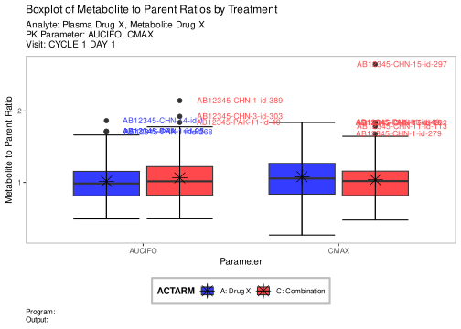

plot <-ggplot(anl_x, aes(x = PARAMCD, y = ratio, fill = ACTARM)) +geom_boxplot(outlier.size =2) +stat_boxplot(geom ="errorbar") +stat_summary(geom ="point",fun ="mean",col ="black",size =5,shape =8,position =position_dodge(0.75) ) +geom_text(data = . %>% dplyr::group_by(PARAMCD, ACTARM) %>% dplyr::filter(ratio %in%boxplot.stats(ratio)$out),aes(x = PARAMCD, y = ratio, label = USUBJID, col = ACTARM),size =3,hjust =-0.2,position =position_dodge(0.75),show.legend =FALSE ) +labs(title ="Boxplot of Metabolite to Parent Ratios by Treatment",subtitle =paste0("Analyte: Plasma Drug X, Metabolite Drug X ","\nPK Parameter: ",as.character(paste(unique(anl_x$PARAMCD), collapse =", ")),"\nVisit: ",as.character((unique(anl_x$AVISIT))) ),caption ="Program: \nOutput:",x ="Parameter",y ="Metabolite to Parent Ratio" ) +theme(plot.caption =element_text(hjust =0)) +theme_nest()# PKPG06plot

Experimental use!
WebR is a tool allowing you to run R code in the web browser. Modify the code below and click run to see the results. Alternatively, copy the code and click here to open WebR in a new tab.
plot <-ggplot(anl_y, aes(x = PARAMCD, y = ratio, fill = ACTARM)) +geom_boxplot(outlier.size =2) +stat_boxplot(geom ="errorbar") +stat_summary(geom ="point",fun ="mean",col ="black",size =5,shape =8,position =position_dodge(0.75) ) +geom_text(data = . %>% dplyr::group_by(PARAMCD, ACTARM) %>% dplyr::filter(ratio %in%boxplot.stats(ratio)$out),aes(x = PARAMCD, y = ratio, label = USUBJID, color = ACTARM),size =3,hjust =-0.2,position =position_dodge(0.75),show.legend =FALSE ) +labs(title ="Boxplot of Metabolite to Parent Ratios by Treatment",subtitle =paste0("Analyte: Plasma Drug Y, Metabolite Drug Y ","\nPK Parameter: ",as.character(paste(unique(anl_y$PARAMCD), collapse =", ")),"\nVisit: ",as.character((unique(anl_y$AVISIT))) ),caption ="Program: \nOutput:",x ="Parameter",y ="Metabolite to Parent Ratio" ) +theme(plot.caption =element_text(hjust =0)) +theme_nest()# resultplot
Experimental use!
WebR is a tool allowing you to run R code in the web browser. Modify the code below and click run to see the results. Alternatively, copy the code and click here to open WebR in a new tab.
# whiskers are formed with the minimum and maximum valuesplot <-ggplot(anl_x, aes(x = PARAMCD, y = ratio, fill = ACTARM)) +geom_boxplot(outlier.size =0) +stat_boxplot(geom ="errorbar", coef =NULL) +stat_summary(geom ="point", fun ="mean", col ="black", size =5, shape =8, position =position_dodge(0.75)) +labs(title ="Boxplot of Metabolite to Parent Ratios by Treatment",subtitle =paste0("Analyte: Plasma Drug X, Metabolite Drug X ","\nPK Parameter: ",as.character(paste(unique(anl_x$PARAMCD), collapse =", ")),"\nVisit: ",as.character((unique(anl_x$AVISIT))) ),caption ="Program:\nOutput:",x ="Parameter",y ="Metabolite to Parent Ratio" ) +theme(plot.caption =element_text(hjust =0)) +theme_nest()# resultplot
Experimental use!
WebR is a tool allowing you to run R code in the web browser. Modify the code below and click run to see the results. Alternatively, copy the code and click here to open WebR in a new tab.
WebR is a tool allowing you to run R code in the web browser. Modify the code below and click run to see the results. Alternatively, copy the code and click here to open WebR in a new tab.
Code
library(dplyr)library(ggplot2)library(tidyr)library(tern)library(nestcolor)adpp <- random.cdisc.data::cadpp# Filter NAsadpp <- adpp %>%filter(PPSPEC !="NA"& PARAM !="NA"& PPCAT !="NA") %>%filter(PARAMCD =="CMAX"| PARAMCD =="AUCIFO", AVISITN ==1)# filter data by PPCAT and calculate ratioanl_x <- adpp %>%filter(PPCAT %in%c("Metabolite Drug X", "Plasma Drug X")) %>%pivot_wider(id_cols =c(USUBJID, ACTARM, PARAMCD, AVISIT),names_from = PPCAT,values_from = AVAL ) %>% dplyr::mutate(ratio =`Metabolite Drug X`/`Plasma Drug X`) %>%filter(!is.na(ratio), ratio !=Inf)anl_y <- adpp %>%filter(PPCAT %in%c("Metabolite Drug Y", "Plasma Drug Y")) %>%pivot_wider(id_cols =c(USUBJID, ACTARM, PARAMCD, AVISIT),names_from = PPCAT,values_from = AVAL ) %>% dplyr::mutate(ratio =`Metabolite Drug Y`/`Plasma Drug Y`) %>%filter(!is.na(ratio), ratio !=Inf)# functions to calculate custom quantiles and outliersquantiles <-function(x) { quant <-quantile(x, probs =c(0.05, 0.25, 0.5, 0.75, 0.95))names(quant) <-c("ymin", "lower", "middle", "upper", "ymax") quant}outliers <-function(x) {return(x <quantile(x, 0.05) | x >quantile(x, 0.95))}